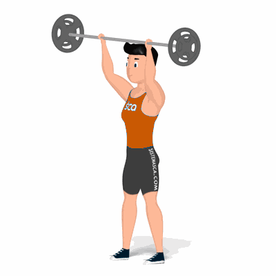

Desenvolvimento com Barra

Exercício para fortalecimento e hipertrofia dos músculos da região dos ombros. Realiza em pé, exige que o praticante possua músculos auxiliares fortalecidos, tais como: admonais, lombares, tríceps, trapézio e peitoral superior.
Ficha Técnica
Tipo: Musculação
Grupo Muscular: Ombro
Aparelho: Nenhum
Músculos: Nenhum
Como realizar
- Pegue uma barra com as palmas das mãos voltadas para frente em uma distância na largura dos ombros;
- Cabeça e costas alinhadas, joelhos semiflexionados, pés ligeiramente separados;
- Posicione a barra para frente à altura do pescoço;
- Com a força dos músculos dos ombros, empurre a barra para cima até os cotovelos ficarem estendidos;
- No ponto máximo do movimento, retorne à posição inicial de forma controlada. 6. Repita os movimentos, conforme o número de repetições orientado pelo professor.
 RC STORE
RC STORE